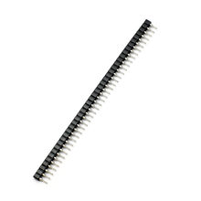

Линейка гнездовая однорядная 40 pin 2.54 мм
РазъёмыКатегория
Разъёмы
Тип
гнездовая колодка (female header)
Рядность
1 ряд
Количество контактов
40
Шаг контактов
2.54 мм
Монтаж
сквозной (THT)
Назначение
соединение плат с штыревыми разъёмами 2.54 мм
Совместимость
штырьковые гребёнки 2.54 мм / 0.1"
Форм-фактор
линейка, обычно разрезаемая на нужную длину
Кратко
Это однорядная гнездовая колодка (female header) на 40 контактов с шагом 2.54 мм. Обычно используется как разъём для плат Arduino, модулей и штыревых гребёнок 2.54 мм.
Описание
Это стандартная однорядная гнездовая линейка для пайки в печатную плату. Шаг 2.54 мм делает её совместимой с распространёнными штыревыми разъёмами, макетными платами и модульными платами. Форм-фактор на 40 позиций удобно брать с запасом и при необходимости укорачивать по длине. Такие колодки применяются в платах расширения, переходниках, самодельных модулях и интерфейсных платах. Как правило, это THT-исполнение для сквозного монтажа.
Документация
Авторитетная справка по pin header и типовым размерам40-pin 2.54 mm single row female header (страница с техданными)40-pin 2.54 mm single row female header, right-angle (страница с техданными)
id hw-2026-017